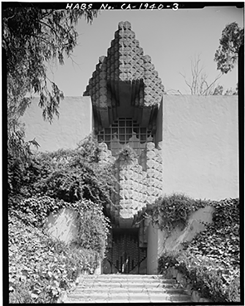

This Mayan Revival home designed by Frank Lloyd Wright Jr., the son of the legendary architect Frank Lloyd Wright towers over Franklin Avenue at the bottom of the Los Feliz foothills. While its unique architectural character is certainly noteworthy, arguably the most interesting thing about the home isn't necessarily the block-style facade, which was inspired by the menacing yet beguiling opening of a cave or an ancient tomb.

After it was built in 1926 for photographer John Sowden and his young family, the house enjoyed years of hosting bohemian parties for Hollywood's in-crowd. But when Dr. George Hodel moved into the house in 1945, its fate as the potential crime scene of America's most notorious cold case, The Black Dahlia, was sealed. Though the murder of Elizabeth Short remains unsolved to this day, by 1950, Dr. George Hodel became one of the prime suspects in her tragic case, and many true crime buffs are convinced that he carried out the crime right inside this iconic Los Feliz mansion.
The home also went through a few stages of abandonment in the late 20th century, making it even more mysterious and spooky to passersby. According to Steve Hodel, former occupant, retired LAPD investigator, and son of Dr. Hodel, several onlookers have noted its haunting trappings. According to Steve, "in the 1970s, [the Hodel housekeeper] returned to the [Sowden] House and informed the then current owner 'this is a house of evil,’” and on another occasion, Edmund Teske pointed to the house saying, "It's an evil place. Artists, philosophers, accountants, and politicians all played and paid there. Murders happened there. It's an evil place." During the same era, Dr. Hodel's daughter Tamar went inside the home and claimed to see the spirit of a young woman in the basement. Years later, in 2016, Ghost Adventures host Zak Bagans investigated the Sowden house with Tamar's daughter Fauna, who claimed to see the exact same spirit her mother did.